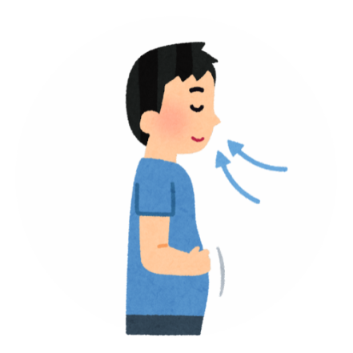

PROSES PERNAPASAN MANUSIA
inhalasi
(Menghirup)

MENARIK NAPAS
Otot diafragma & otot di antara tulang rusuk berkontraksi sehingga rongga dada membesar. Hal ini membuat ruang untuk paru-paru mengembang.
UDARA MASUK KE PARU-PARU
Udara yang dihirup melalui hidung atau mulut akan masuk ke tenggorokan, trakea, bronkus, bronkiolus, dan akhirnya ke alveolus.
PERTUKARAN UDARA
Di alveolus, oksigen yang dihirup akan bertukar dengan karbon dioksida yang dibawa oleh darah.
OKSIGEN KE SELURUH TUBUH
Oksigen yang baru didapatkan akan dibawa ke seluruh tubuh melalui pembuluh kapiler dan sel darah merah.
KARBONDIOKSIDA KELUAR